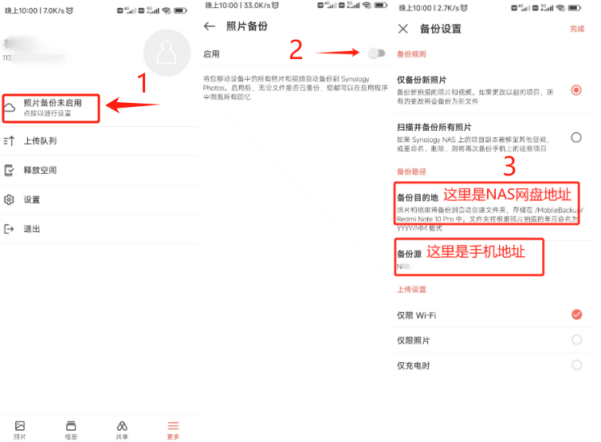

群晖Synology-Photos
说明，这里可以搜索官网介绍。简而言之就是一种管理照片的服务程序
优点是作为手机照片云盘，可以上传你手机的照片作存档，并且通过网络方式进行【查看】、【下载】、【分享】等操作。
安装套件-服务端
Synology Photos | 群晖科技 Synology Inc.
这一步已经部署完成了，是在NAS服务器上安装群晖Synology-Photos套件即可。
移动端程序
可扫描下方二维码下载程序：左边是苹果，右边是安卓
账号登录
输入网址：113.219.237.121:26419
账号：自己名字
密码：”家里Wifi密码，首字母大写“
协议：HTTPS（貌似我用的内网穿透工具，http是不能识别的）
其他说明：如果登录过程有弹窗提示，按提示继续即可。
功能
登录后，如下是程序的界面。下面我将大致介绍几种功能使用：
上传
如果你的NAS账号下，是完全没图片的话，那会是显示上面的界面。点击【添加照片】即可进行上传；或者可以点击右上角的【…】，也是可以上传文件
相册
首先你需要知道，相册不是文件夹（相册是需要手动选择放入，组成一组照片的集合）。创建相册后选择前一步上传到NAS的照片到相册即可。
备份
在程序左下角【更多】，找到照片备份未启用，进行备份设置。
补充说明：似乎苹果的备份和安卓的备份界面是不一样的，苹果没有备份源（手机的相册地址）选择。
下载
这个操作比较简单，选择照片后，点击右上角的【…】操作下载照片；
分享
我认为分享有两种方式：分享单张照片 或 分享相册
单张分享：可以选择照片后，点击右上角的【…】操作分享照片；
分享相册：在分享前你需要先创建相册，在选择相册，点击分享，启动后会出现一个“共享链接”。注意：链接是内网（家里2楼WiFi）的链接，如果需要在外网查看则将IP（192.168.0.100:5000）替换成外网地址（113.219.237.121:26419）即可。
相册分享后，根据权限的设置，可以分享给其他人观看（公开分享，是非NAS账号也可以看到）
Q&A
Q系统里文件夹可以看见照片文件，不过在Synology-Photos程序里没见到。
A登录到Synology-Photos程序，点击右上角的账号，【设置，重建索引】